Ce qu'il faut faire, dans l'ordre
Console en veille avec téléchargements automatiques, puis vérification manuelle dans les paramètres système. Si la console n'a pas été allumée depuis le 17, le téléchargement n'a pas commencé.
19 novembre 2026 · ouverture en cours
Tout ce qui a changé dans les dernières 24 heures, classé par ce que ça change pour votre première session : les correctifs, les horaires, la performance, l'argent, la radio. Chaque ligne porte sa source et son statut — et les fausses informations qui circulent sont nommées.
Le jeu est sorti en Nouvelle-Zélande à midi, heure de Paris. Le reste du monde ouvre à minuit local. Voici l'état vérifié à cette heure.
| Sujet | État | Statut |
|---|---|---|
| Ouverture mondiale | Nouvelle-Zélande ouverte à 11:00 UTC ; France à minuit, nuit du 18 au 19 | PRESSE |
| Correctifs | 1.002 (13/11) et 01.002.001 (16/11), sans notes publiées | PRESSE |
| Firmware PS5 | 26.07-14.23.00 obligatoire pour lancer le jeu | PRESSE |
| Mode en ligne | Aucun. Solo strict à l'ouverture | OFFICIEL |
| Version PC | Aucune annoncée | OFFICIEL |
| Notes | Metacritic 99, OpenCritic 98, aucune critique négative | PRESSE |
Sony a rendu une mise à jour système obligatoire pour lancer le jeu : sans elle, GTA VI ne démarre pas, même installé et à jour. C'est le seul prérequis du soir qui ne vient pas de Rockstar.
| Élément | Valeur | Portée |
|---|---|---|
| Version | 26.07-14.23.00 | PS5, PS5 Slim et PS5 Pro |
| Taille | ≈ 1,3 Go (1,267 Go mesuré) | téléchargement automatique en veille |
| Contenu annoncé | « correctifs de sécurité » — rien d'autre | aucune note spécifique au jeu |
| Échéance | avant minuit le 19/11 | message officiel du support PlayStation |
FIX-01
Console en veille avec téléchargements automatiques, puis vérification manuelle dans les paramètres système. Si la console n'a pas été allumée depuis le 17, le téléchargement n'a pas commencé.
Une mise à jour pré-lancement est rapportée : environ 1,07 Go sur PS5 et 2,18 Go sur Xbox Series X|S, sans contenu confirmé. Le cloud Xbox reste calé sur le 19/11, avec les réglages graphiques de la Series S. FIX-05
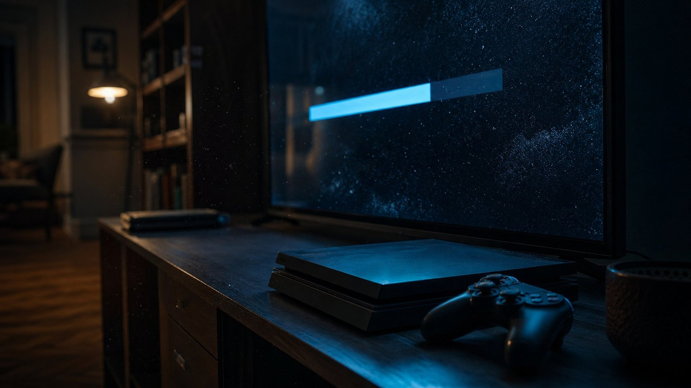
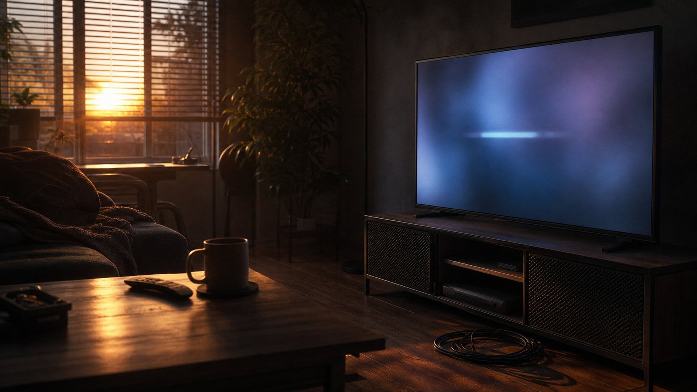
Digital Foundry a publié son analyse technique le 18 novembre, sur versions commerciales. Ce sont les seuls chiffres à retenir : les impressions de fil Reddit vont de « parfaitement fluide » à « injouable » pour la même machine, selon la zone et l'heure.
| Console | Rendu interne | Mise à l'échelle | Cadence observée |
|---|---|---|---|
| PS5 Pro | 2560×1440 | PSSR vers 4K | quasi verrouillée à 30 ; 24 dans les pires explosions |
| PS5 | 2560×1440 | TAA maison vers 4K | 30 avec descentes dans la vingtaine haute |
| Xbox Series X | 2560×1440 | TAA maison vers 4K | 30 avec descentes, jusqu'à 22 en scène chargée |
| Xbox Series S | 720p | AMD FSR 4 vers 1080p | ≈ 27 en jeu, 25 en fusillade, 20 en scène intense, 18-19 en explosion |
DFF-03 DFF-04
Rockstar a répondu à TechRadar le 18 novembre : « la complexité à simuler et rendre notre monde » impose de répartir chaque milliseconde entre processeur et carte graphique, avec « seulement 33 ms pour le faire ». Le processeur de la PS5 Pro n'est que légèrement supérieur à celui de la PS5 : il ne peut pas faire tourner la simulation plus vite. PRF-02
Mode Jeu et interpolation coupée sur la télévision, VRR activé si l'écran le supporte, ventilation dégagée. Sur une base PS5, éviter de juger la fluidité pendant le prologue : plusieurs joueurs décrivent des saccades qui disparaissent en jeu libre. DFF-01
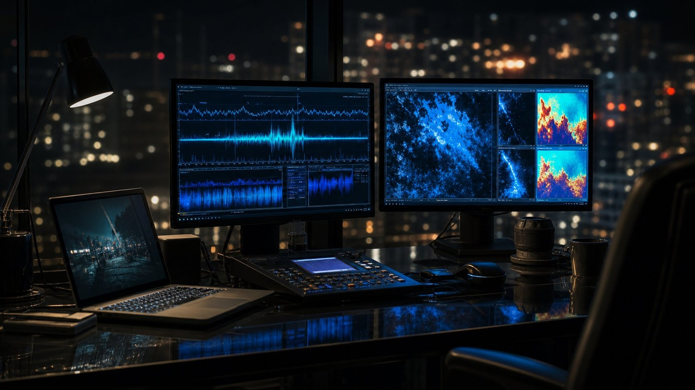
Le soir de la sortie, des milliers de joueurs n'ont pas pu se connecter : messages « services occupés », échec de connexion aux services en ligne, alors que la box fonctionnait. Sony a reconnu une panne des services de jeu et de réseau social, puis le retour à la normale.
| Moment | Ce qui se passe |
|---|---|
| ≈ 19 h | premiers signalements, environ 876 sur Downdetector |
| ≈ 20 h | plus de 4 000 signalements, page d'état PlayStation en panne sur « Gaming and Social » |
| ≈ 21 h | tous les services repassés au vert, sans explication officielle |
| minuit | ouverture européenne ; les retardataires téléchargent encore |
PRF-04
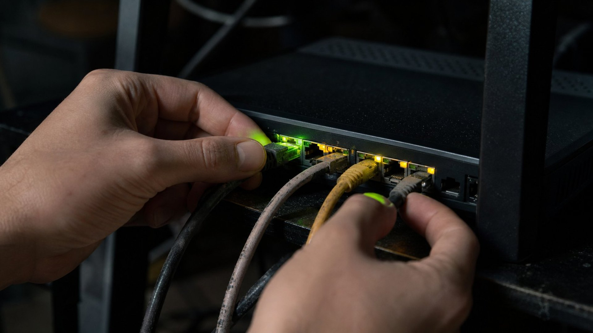
Le nombre tourne partout depuis l'ouverture. Il faut le dire clairement, parce que le contraire se lit dans la moitié des articles : ni Rockstar ni Take-Two n'ont publié le moindre chiffre de ventes pour GTA VI au 19 novembre 2026. Le champ est vide, pas nul.
| Chiffre | Nature | Portée |
|---|---|---|
| ventes, précommandes, revenus | aucun chiffre publié | Take-Two et Rockstar, au 19/11 |
| 17,07 M de copies · 1,65 Md$ | estimation Sensor Tower | précommandes numériques PS5 + Xbox, arrêtées au 18/11 |
| 3,35 à 3,5 Md$ de réservations nettes | prévision Take-Two | trimestre clos le 31/12/2026 — pas une vente du jeu |
| 11,21 M · 815,7 M$ en 24 h | record officiel de GTA V (2013) | la référence à battre, homologuée Guinness |
SAL-01 SAL-02
L'action Take-Two avait perdu près de 10 % sur les deux séances précédant la sortie, avant de reprendre environ 7,7 %. Un lancement record n'est pas un cours record : c'est ce que disent les marchés, pas ce que dit le jeu. SAL-04
Dès qu'un chiffre officiel est publié, il entre ici avec sa date et sa source, et l'estimation Sensor Tower reste affichée à côté, étiquetée comme telle. Tant qu'il n'y a rien, cette page le dit — c'est la seule position tenable. SAL-03
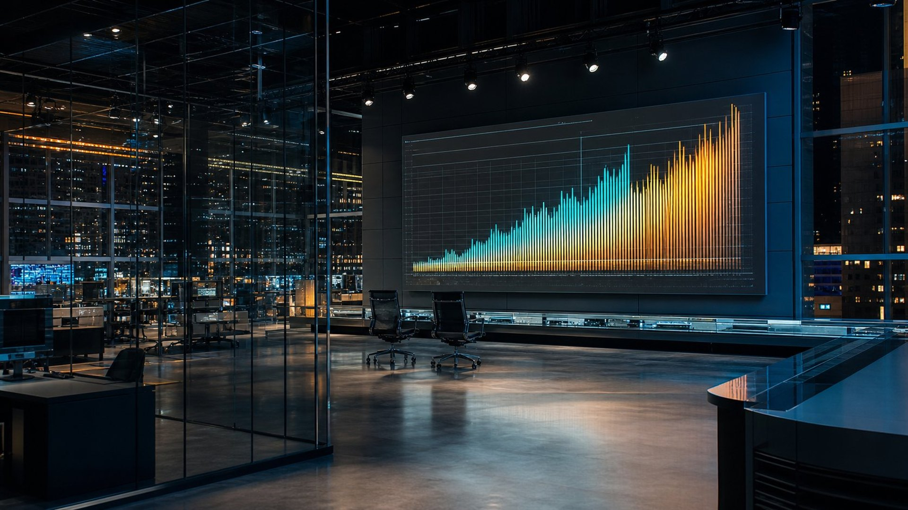
Trois vérifications refaites après l'ouverture. Elles disent surtout ce qui manque encore.
| Sujet | État | Nature |
|---|---|---|
| notes de version | toujours aucune, ni pour 1.002.000 ni pour 1.002.001 | constat daté |
| chiffre de ventes | aucun communiqué de Take-Two | constat daté |
| mode performance | aucun, et Rockstar a expliqué pourquoi | déclaration du 18/11 |
| contenu en ligne | aucun, solo strict | officiel |
FIX-06
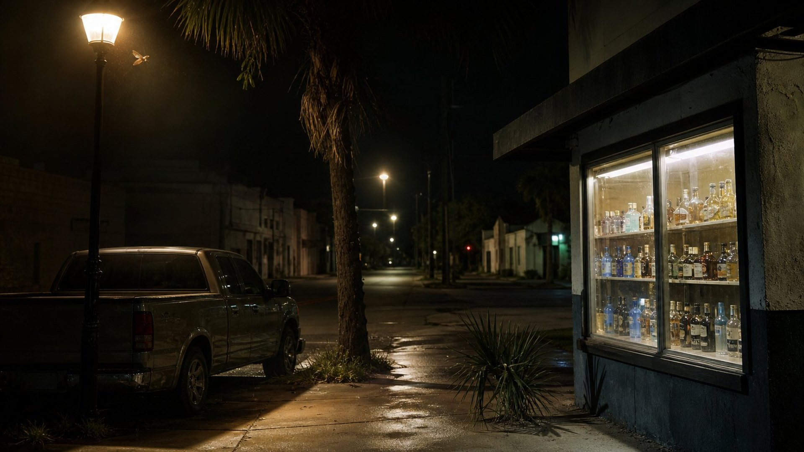
Une vérification de plus, et elle porte sur nos propres données : la taille du correctif du 13 novembre avait été arrondie du mauvais côté. Ce qui était annoncé est corrigé ici, sans effacer l'erreur.
| Version | Date | PS5 | Xbox Series X|S |
|---|---|---|---|
| 01.002.000 | 13/11 | ≈ 1,07 Go | ≈ 2,18 Go |
| 01.002.001 | 16/11 | 602,5 Mo | ≈ 1,59 Go |
REL-34
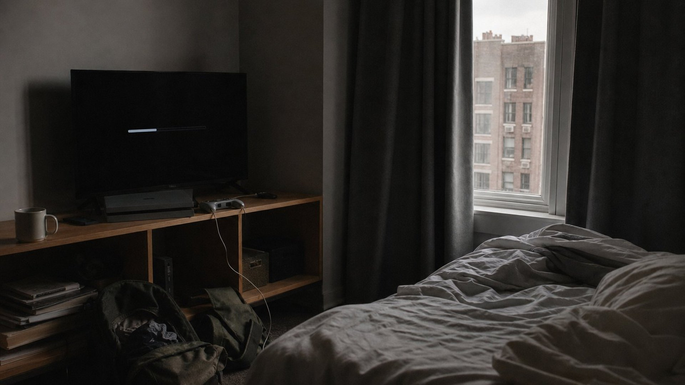
Le premier obstacle n'a pas été Rockstar. Vers 18 h (heure du Royaume-Uni) le 18 novembre, le PlayStation Network a connu une panne d'environ 45 minutes, suivie d'un pic d'environ 10 000 signalements aux États-Unis à 7 h 05 GMT le 19. Le jeu, lui, était un jeu solo : aucun serveur Rockstar à blâmer.
| Symptôme | Cause identifiée | Ce qu'on peut faire |
|---|---|---|
Code WS-116449-5 | PSN surchargé ou en maintenance (« service under maintenance ») | consulter la page d'état PlayStation, attendre |
| « Services Sony occupés » | trop de tentatives de connexion simultanées | réessayer plus tard, pas de manipulation miracle |
| Le jeu ne démarre pas | firmware PS5 26.07-14.23.00 absent | installer le firmware, redémarrer la console |
| « Problème réseau temporaire » (Xbox) | réseau Xbox ou vérification de licence | option hors ligne de l'écran, puis redémarrage complet |
| Espace insuffisant | 212 Go demandés par Rockstar, 225,3 Go annoncés sur la fiche Xbox | prévoir la marge la plus large |
REL-37
REL-36La panne, datée — environ 45 minutes le 18 novembre, puis un pic de signalements le matin du 19. Sony n'a pas publié de cause et n'a établi aucun lien officiel avec le jeu.REL-38Xbox, dépannage rapporté — l'option hors ligne de l'écran d'erreur a fait entrer un joueur directement dans le jeu. Autres symptômes du soir : véhicules qui apparaissent tard, voitures qui disparaissent, audio haché sur Series X.REL-39Deux chiffres d'espace disque qui ne concordent pas — 212 Go chez Rockstar, 225,3 Go sur la fiche Microsoft. Prévoyez le plus grand.CMT-35Audience du soir — plus de 2,5 millions de spectateurs Twitch une demi-heure après le déblocage, pic rapporté à 3,3 millions : un record pour un jeu solo. Une audience n'est pas une preuve de contenu.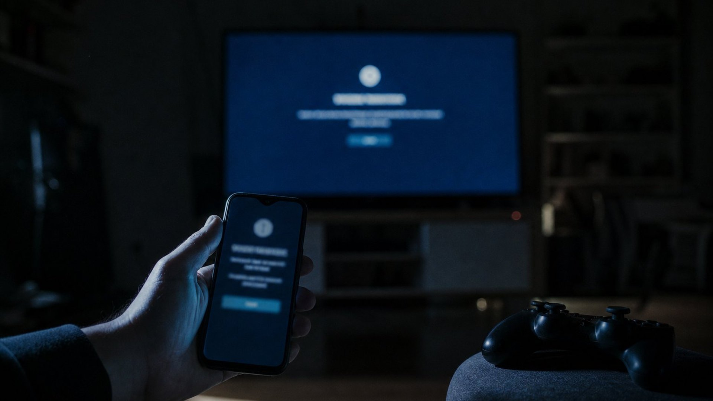
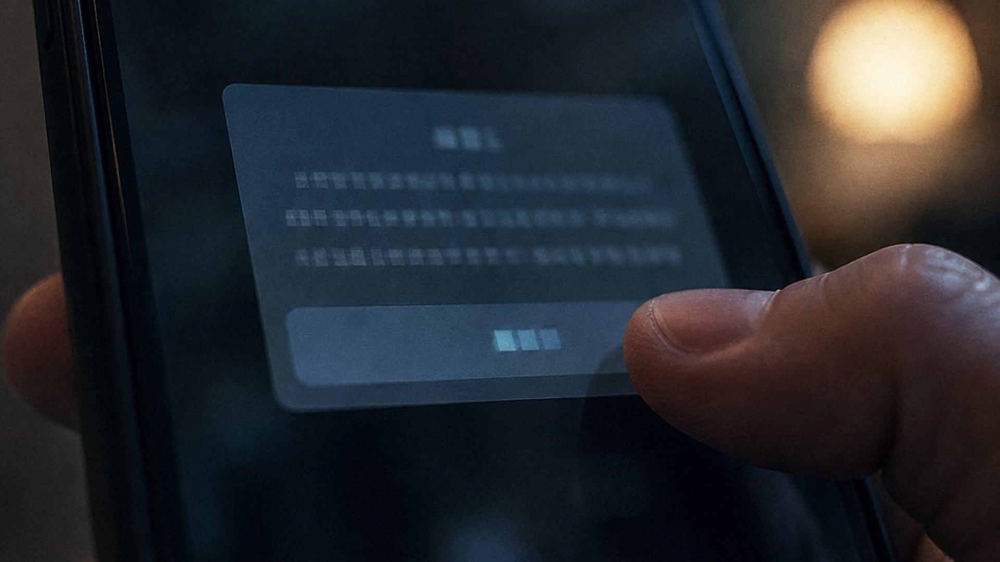
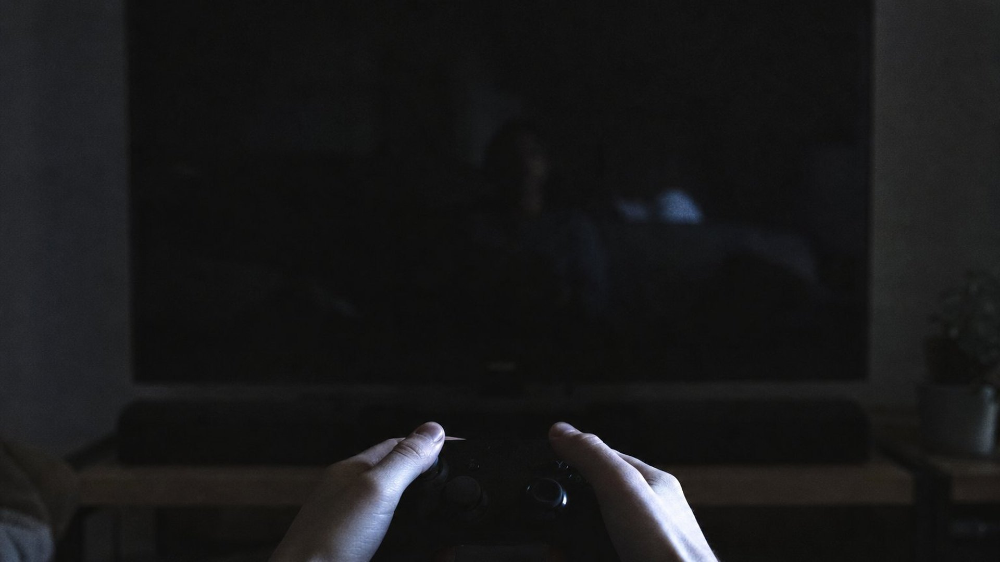
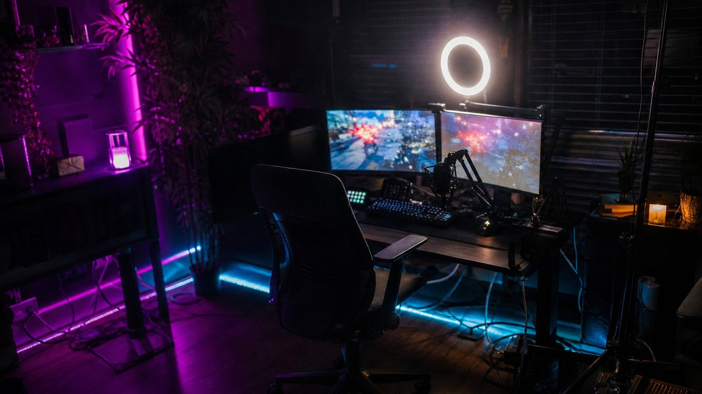
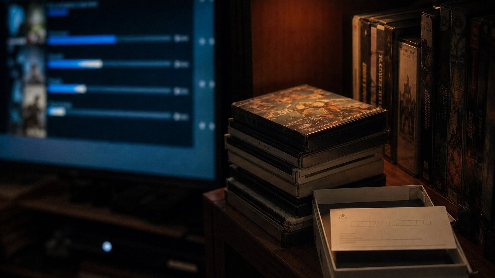
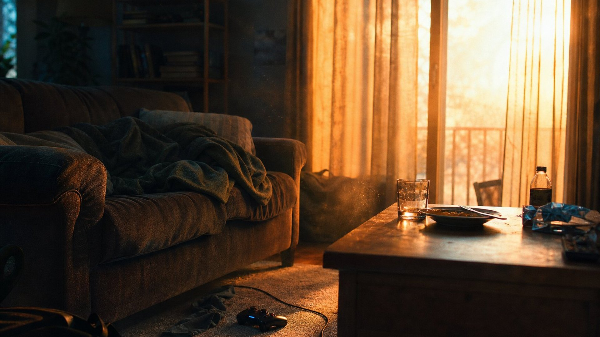
Le jeu est sorti dans son premier fuseau le 18 novembre à 11:00 UTC (midi à Paris). Pour l'Europe, il reste douze heures ; pour la côte ouest américaine, vingt et une. Ce que les premiers joueurs ont vu, et ce qu'il faut en retenir sans se faire spoiler.
Graphismes salués, sensation de fluidité, écriture jugée profonde, et les systèmes météo locaux cités par presque tous les premiers joueurs : une tempête qui enveloppe la carte et se déplace comme un front. Aucune panne technique majeure signalée dans les heures qui suivent. LAU-38
« 99 sur Metacritic » a circulé sur les réseaux sociaux avant même l'ouverture européenne, présenté comme acquis. Notre relevé vient des agrégateurs consultés le 18/11 et reste mouvant : traitez tout score cité sans date comme une rumeur. REV-27
Pas de version native. Le jeu est diffusé par Xbox Cloud Gaming à partir de 1 h (heure de l'Est) le 19/11, au préréglage Series S, 30 fps, achat séparé. Le quota d'heures mensuel du Game Pass s'applique. LAU-39 LAU-40
Environ 17,07 millions d'unités précommandées pour ≈ 1,65 milliard de dollars selon Sensor Tower (estimation, non auditée), 75 % sur PS5. Le 18/11, Twitch comptait ≈ 2,46 millions de spectateurs simultanés sur le jeu. LAU-41
Trois vérifications, dans cet ordre : elles évitent de perdre la première heure en téléchargements.
Jusqu'à 212 Go selon la console, avant les correctifs. Vérifier l'espace libre, pas l'espace affiché : une PS5 pleine échoue silencieusement.
PS5 : mise à jour système 26.07-14.23.00 (≈1,2 Go) requise. Si les mises à jour automatiques sont actives, elle est déjà là.
1.002 puis 01.002.001. Comptez ≈1,07 Go + 602 Mo sur PS5, ≈2,18 Go + 1,59 Go sur Xbox. Les laisser finir avant minuit. TIP-32 LAU-31
Détail complet, horaires fuseau par fuseau et méthode anti-spoiler : page Lancement.
C'est le système où les guides publiés aujourd'hui divergent le plus. Une seule règle est confirmée, et elle suffit à éviter le pire.
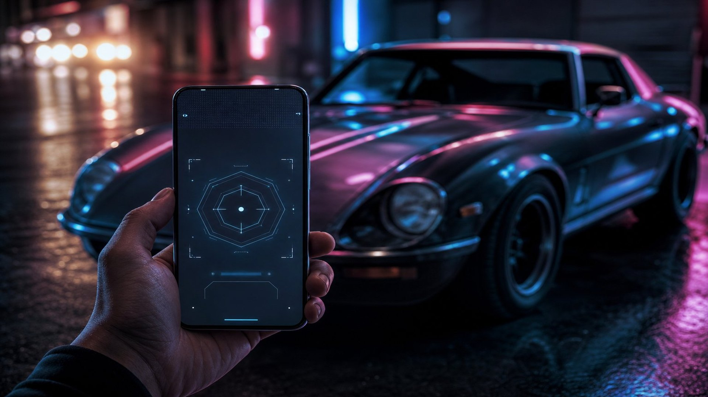
Le plafond à 30 fps est le point le plus commenté de la journée. Les mesures de Digital Foundry, publiées à l'ouverture, valent mieux que les impressions.
Conséquence pratique : les fusillades prolongées sont le pire cas, pas la conduite. Analyse complète sur la page Tests.
Six stations ont été nommées par Rockstar le 8 octobre. Les premières écoutes du 18 novembre en révèlent plus d'une vingtaine — dont V-Rock, Vice City FM, Emotion 98.3 ou Leonida Jazz Radio. Aucun total officiel n'existe.
Deux usages confirmés changent la donne : la radio s'écoute à pied via le téléphone et des écouteurs, et des podcasts à la demande complètent le dispositif. Sur le plan discographique, The Album compte 34 titres (Atlantic) et le score 30 titres + bonus, le 11 décembre 2026. MUS-12 MUS-14
Tables complètes : page Musique.
Le jour d'une sortie de cette taille, les pages qui promettent des codes et des revenus publient plus vite que les vérifications. Voici ce qu'il faut écarter.
| Affirmation | Pourquoi c'est faux | Où c'est vrai |
|---|---|---|
| « Un code de triche donne 250 000 $ » | Aucun code de triche fonctionnel n'est référencé ; les suites de touches circulent depuis des années et ne font rien. | Nulle part. FAUX |
| « Des commerces rapportent 50 000 $ par semaine » | Aucun commerce achetable, aucun revenu passif, aucun prix n'est confirmé. | Page Lieux réels FAUX |
| « La version PC arrive en janvier » | Rockstar n'a annoncé aucune version PC ; toute date relève de la spéculation. | ESTIMATION |
Attention : ce bloc mentionne des noms de missions et de lieux débloqués par l'histoire, relevés par des joueurs néo-zélandais le 18/11. Rien ici n'est confirmé par Rockstar. SPOILER PRESSE · 18/11
buck-me, building-a-life, coming-home, clear-skies) proviennent de fichiers de captures relayés par des bases de données communautaires : ils ne sont pas officiels et peuvent changer.Caméra, témoin, vêtements, visage, arme, véhicule : la police poursuit ce qu'elle peut prouver. Chacune s'annule d'une manière précise. Détail. POL-35
Cinq chapitres, pas de menu de replay : une sauvegarde manuelle au début et à la fin de chaque chapitre. Les manquables. MIS-42
Sécurité moyenne ou élevée : duo obligatoire, sacs échangés, butin vendu pendant la fuite. Billets marqués : chapitre 3 minimum. La séquence. TIP-33
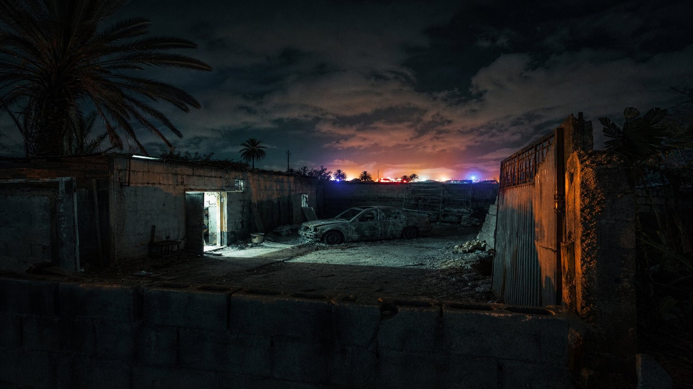
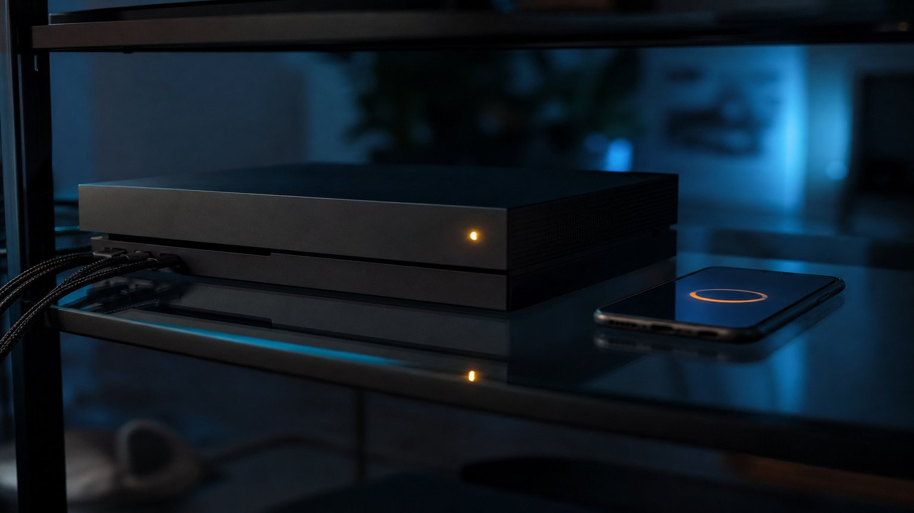
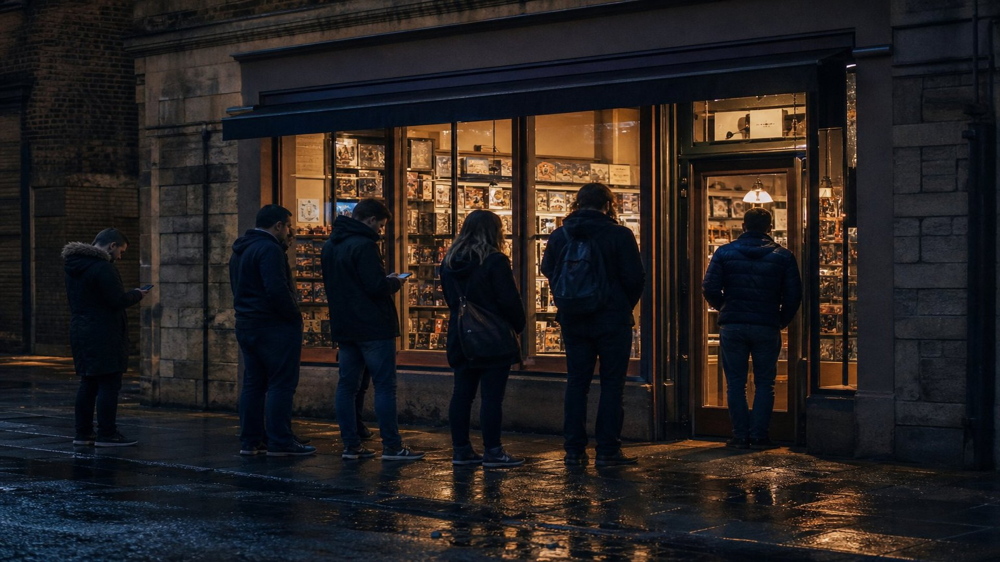